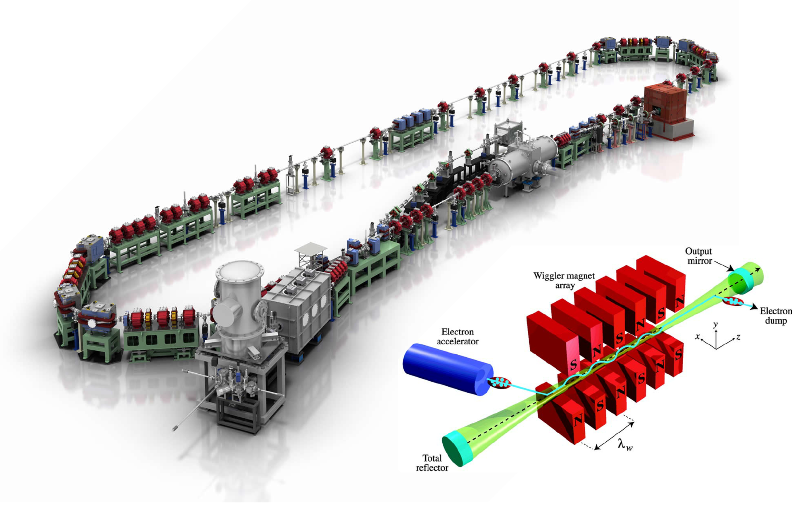

The semiconductor industry faces a critical bottleneck in extreme ultraviolet (EUV) lithography - the advanced technology needed to manufacture today's most sophisticated computer chips. Currently, this $10 billion market is monopolized by a single Dutch company, ASML, whose systems rely on laser-produced plasma light sources that are approaching their fundamental limits. As a project for an entrepeneurship course for STEM graduate students I took at Brown University,I conducted a technical and market analysis exploring an alternative approach to EUV lithography: using free electron lasers (FELs) as EUV light sources
Free electron lasers work by accelerating electrons to nearly the speed of light, then passing them through a series of alternating magnets called an undulator. As the electrons "wiggle" through these magnetic fields, they emit light at wavelengths determined by the electron energy and magnet spacing. Unlike traditional lasers that rely on atomic transitions in specific materials, FELs can be tuned to produce light at any desired wavelength simply by adjusting these parameters. This flexibility, combined with their potential for very high power output, makes them particularly interesting for next-generation chip manufacturing.
My analysis revealed that FEL-based systems could potentially leapfrog current technology by delivering higher power output and wavelength tunability - key advantages for future chip manufacturing nodes. While the estimated $250M development cost is substantial, it could be significantly reduced by leveraging existing Department of Energy facilities. However, the intellectual property landscape presents serious challenges, with ASML and its partners controlling 57% of relevant patents.
The project, which combined technical analyis, bibliometrics, patent landscape evaluation, and market research, suggests that FEL-based EUV lithography warrants serious consideration given the technology's promising capabilities and the strategic importance of establishing a domestic advanced chip manufacturing ecosystem. The projected $25 billion market size by 2028 could justify the necessary investment.
My complete analysis for this project can be found in the PDF below.